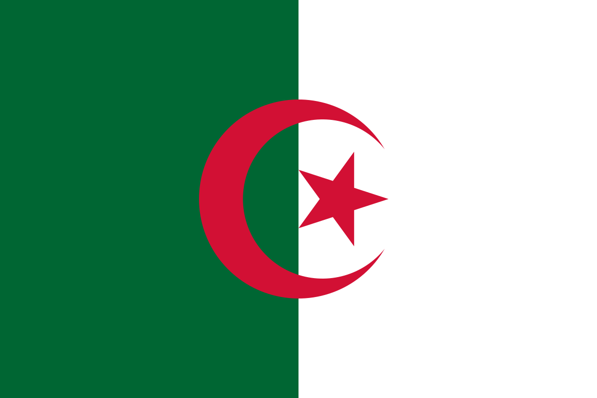

L'HISTOIRE DE L'ALGERIE
L’Algérie, riche d’une histoire millénaire, a été occupée par diverses civilisations, des Phéniciens et Romains aux Vandales et Byzantins, avant d’être arabisée avec l’arrivée des Omeyyades au VIIe siècle. Après des siècles sous la domination des dynasties berbères et ottomanes, elle est colonisée par la France en 1830, entraînant une résistance acharnée menée par des figures comme Abdelkader. Après 132 ans de colonisation et une guerre d’indépendance sanglante (1954-1962), l’Algérie devient indépendante le 5 juillet 1962 grâce aux efforts du FLN et du peuple algérien. Depuis, le pays a traversé différentes périodes politiques, marquées par le socialisme, la crise des années 1990 et une transition vers des réformes modernes, tout en restant un acteur majeur en Afrique du Nord grâce à ses richesses naturelles, notamment le pétrole et le gaz.
L’Algérie dispose de nombreux atouts qui renforcent son importance à l’échelle régionale et internationale. Son emplacement stratégique en fait un pont entre l’Europe, le Maghreb et le Sahel, avec un accès direct à la Méditerranée, favorisant le commerce et les échanges. C’est également le plus grand pays d’Afrique, offrant une diversité de paysages allant du Sahara aux montagnes du Tell, en passant par des plaines fertiles. Sur le plan économique, l’Algérie est l’un des principaux producteurs de gaz naturel et de pétrole, constituant un pilier essentiel de son économie et de son influence énergétique. Son potentiel agricole est également important grâce à des terres fertiles propices à la culture des céréales, des olives et des agrumes. Par ailleurs, son héritage historique et culturel est riche, marqué par des civilisations anciennes, un patrimoine varié et une identité nationale forte. Enfin, avec une jeunesse dynamique et une population en croissance, le pays possède un vivier de talents pouvant contribuer à son développement futur.
Depuis son indépendance en 1962, l’Algérie a traversé plusieurs transformations politiques et économiques. Après une phase de socialisme et de nationalisation sous Boumédiène, le pays connaît une ouverture sous Chadli Bendjedid avant d’entrer dans la décennie noire des années 1990, marquée par un conflit sanglant entre l’État et les groupes islamistes. La stabilité revient sous Bouteflika, avec une politique de réconciliation et une économie soutenue par les hydrocarbures. En 2019, le mouvement populaire du Hirak pousse à un changement de régime, ouvrant une nouvelle ère de réformes et de défis pour diversifier l’économie et moderniser le pays.
Vous pouvez aussi vous interesser à que faire en Algérie